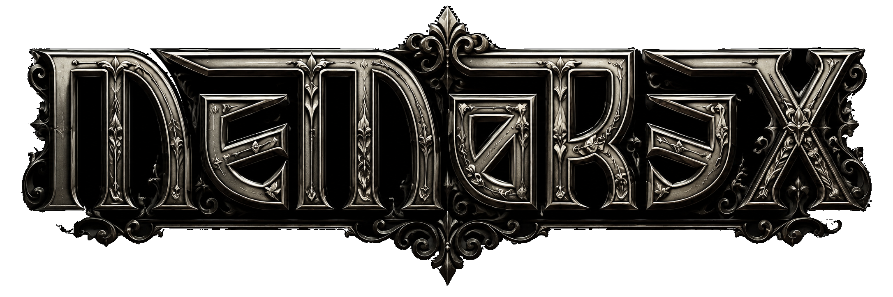

Memorex is a British underground rapper, songwriter, producer, and creator of the Gothic Rap movement, whose career has spanned more than two decades. Often known as the "Vampire of Rap," Memorex blends boom-bap hip-hop, gothic horror, dark fantasy, romance, and storytelling into a unique artistic universe populated by recurring characters and alter egos. At the heart of this mythology is Memorex himself, a vampire-themed narrator whose music explores themes of love, loss, death, memory, the supernatural, and the human condition. Alongside him exist several distinct personas, each serving a different creative purpose: Dead Shifty, an exaggerated and cartoonishly controversial provocateur whose outrageous humour and shock tactics push satire and dark comedy to absurd extremes; Echospeak, a romantic gothic poet whose music focuses on love, heartbreak, longing, and emotional vulnerability; and Nitemare Nadia, perhaps the most enigmatic of all, a haunted figure who believes himself possessed by the spirit of his deceased girlfriend, Nadia Franciscus, transforming both physically and psychologically under her influence. These characters, together with projects such as Rye Town's Creatures and numerous concept albums, form an interconnected mythology that stretches across Memorex's extensive catalogue. Drawing inspiration from classic horror films, gothic literature, old-school hip-hop, wrestling, B-movies, vampires, and underground culture, Memorex has spent years building a body of work that exists somewhere between music, storytelling, theatre, and dark fantasy. More than simply a rapper with multiple aliases, Memorex is the architect of a long-running gothic universe in which every character, album, and persona represents a different facet of the same creative vision.